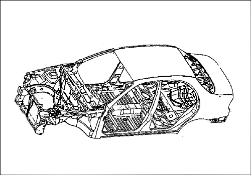
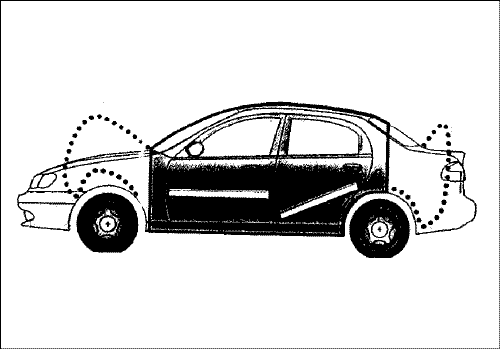
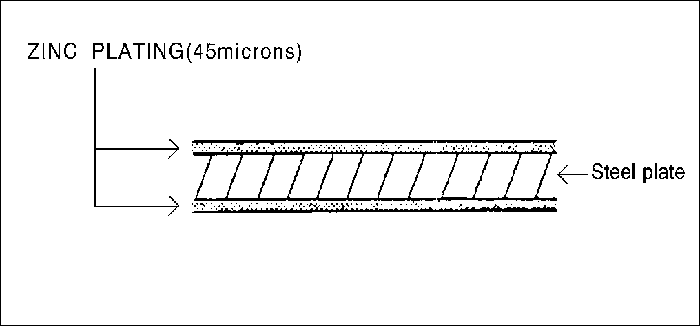

ОБЩАЯ ИНФОРМАЦИЯ
ОБЩИЕ ИНСТРУКЦИИ
Данное руководство предназначено для специалистов по ремонту кузовов и призвано помочь им в работе. На протяжении истории автомобиля конструкция кузова значительно менялась. По мере технического совершенствования автомобилей возникали и новые требования к конструкции кузова, вызванные необходимостью согласования, казалось бы, несовместимых потребностей, как-то:
- прочность и безопасность - и малая масса
- большой объем - и хорошая аэродинамика
- высокое качество - и низкая цена
Не менее важны также долговечность и простота ремонта кузова.
Сегодня применение высокоавтоматизированного производственного оборудования позволяет выдерживать самые жесткие допуски и тем самым обеспечивать высочайшее качество.
В случае повреждения кузова автомобиля клиент с полным основанием ожидает, что он будет отремонтирован высококвалифицированными специалистами с соблюдением тех же стандартов качества.
В то же время в интересах безопасности клиента вы должны обладать исчерпывающим знанием материалов, методов измерения и правки, возможных деформаций, оптимальных методов предотвращения коррозии и многих других вещей.
Данное руководство поможет вам обновить ваши знания и даст вам представление о том, что необходимо для устранения повреждений в результате умеренных и серьезных аварий, с максимальной безопасностью для вас и к максимальному удовлетворению ваших клиентов.
ВАЖНОЕ УВЕДОМЛЕНИЕ О БЕЗОПАСНОСТИ
ПЕРЕД НАЧАЛОМ РАБОТ
- Отсоединить аккумулятор, чтобы уменьшить вероятность возгорания в результате короткого замыкания электропроводки.
- Проверить, нет ли утечек топлива, и при необходимости устранить их.
- Если предстоит использовать сварочное оборудование рядом с топливной системой, снять топливный бак и/или топливопроводы.
- Перед сваркой, шлифовкой или резкой защитить коврики и сиденья несгораемыми чехлами.
- При работе с токсичными или огнеопасными жидкостями соблюдать стандартные правила техники безопасности.
- При окраске с помощью пульверизатора, сварке, резке, шлифовке или обтачивании использовать стандартные защитные приспособления. Стандартные защитные приспособления - это, в частности:
- Респираторы и фильтрующие маски: Обеспечивают защиту от токсичного дыма, тумана, пыли и других взвешенных в воздухе частиц. Использовать респиратор или фильтрующую маску, соответствующие вредным воздействиям конкретной работы: например, некоторые модели обеспечивают фильтрацию только пыли и взвешенных в воздухе частиц, но не токсичных дымов.
- Защитные очки: Защищают глаза от летящих предметов, частиц пыли и брызг жидкости.
- Перчатки/рукавицы: Резиновые перчатки защищают от воздействия едких жидкостей. Рукавицы сварщика защищают от ожогов и травм при сварке, шлифовке или обточке.
- Защитная обувь: Нескользящая подошва предохраняет от поскальзывания. Металлическая обивка носка защищает от падающих предметов.
- Затычки для ушей: Защищают барабанные перепонки от вредного воздействия сильного шума.
ВО ВРЕМЯ РАБОТЫ
- Не курить при работе вблизи топливной системы.
- Складывать тряпки, пропитанные бензином или растворителем, в контейнер установленного образца.
- Не пользуйтесь для очистки тормозных узлов струей воздуха: использовать только пылесос рекомендованного типа и надевать рекомендованную фильтрующую маску или респиратор.
- Используя гидроцилиндр или правильный стенд, всегда прикреплять страховочный трос. Не стоять на одной прямой с цепями, которые применяются в подобном оборудовании.
БЕЗОПАСНОСТЬ КУЗОВА
Современные несущие кузова конструируются таким образом, чтобы создать вокруг пассажира жесткую зону, защищенную передней и задней зонами смятия.
- В случае аварии зоны смятия поглощают энергию удара, превращая ее в работу деформации.
- Форма, материал и толщина металла должны точно соблюдаться.



- Многолетний опыт, совершенные вычислительные методы и многочисленные серии краш-тестов позволяют DAEWOO сегодня создавать кузова с оптимальным режимом деформации в зонах смятия при лобовом или заднем ударе.

Поэтому при ремонте кузова обязательно необходимо восстанавливать первоначальную конструкцию и прочность, чтобы гарантировать безопасность пассажиров автомобиля.
НАГРУЗКИ НА ДЕТАЛИ КУЗОВА
- Существовавший в прошлом принцип деления частей автомобиля на несущие и ненесущие, на шасси и кузов, сегодня не оправдывает себя. Каждая часть автомобиля, даже окна, вносит свой вклад в общую прочность автомобиля.
Поэтому применительно к современным кузовам DAEWOO можно говорить скорее о более нагруженных и менее нагруженных частях.
ПРИМЕНЕНИЕ НОВЫХ ВЫСОКОКАЧЕСТВЕННЫХ МАТЕРИАЛОВ
- Необходимость снижения массы кузова привела к уменьшению количества используемой стали, в частности, за счет применения более тонкого листа. Сделать это несмотря на необходимость повышения прочности кузова стало возможно благодаря применению ВЫСОКОПРОЧНЫХ ЛИСТОВЫХ СТАЛЕЙ. Высокопрочные стали превосходят обычную сталь по прочности на растяжение и сдвиговой прочности на величину до 30%. Эти характеристики не должны быть нарушены при ремонте, например, в результате чрезмерного нагревания.
ЗАЩИТА ОТ КОРРОЗИИ
- Долговечность кузова, его безопасность и сохранение качества в долгосрочной перспективе вы значительной степени зависят от антикоррозийной защиты листового металла. В эту область DAEWOO вкладывает значительные усилия при производстве.
- Соответственно эту защиту от коррозии необходимо сохранять и восстанавливать при выполнении ремонта.
КРАТКОЕ ЗАКЛЮЧЕНИЕ
- Все автомобили DAEWOO производятся в соответствии с высочайшими стандартами качества в отношении стиля и характеристик материалов.
- Эти стандарты качества также необходимо соблюдать при ремонте после аварии.
- Ошибки при выполнении ремонтных операций, таких как правка, сварка деталей из листового металла и т.п., не только приводят к появлению внешних дефектов, но и могут повлечь снижение безопасности автомобиля.
- Ошибки при восстановлении защиты от коррозии ухудшают долговечность.
РЕМОНТ ОЦИНКОВАННОГО СТАЛЬНОГО ЛИСТА
Оцинкованный стальной лист, используемый в некоторых деталях EVANDA, требует других технологий ремонта, чем обычный стальной лист.

- Перед точечной сваркой оцинкованного стального листа удалить краску с обеих сторон свариваемой кромки. После сварки наложить на кромку герметизирующую ленту.
Внимание! Во избежание травм глаз надевать защитные очки при шлифовке, резке или полировке.
Примечание: Тщательно герметизировать зачищенные поверхности во избежание ржавления.
- Оцинкованный стальной лист также отличается от обычного по электропроводности. При точечной сварке необходимо увеличить на 10-20% ток или увеличить время сварки.
- Также увеличить на 10-20% количество точек сварки.
Примечание: Дуговая сварка оцинкованной стали плавящимся электродом в среде инертного газа не отличается от сварки обычной стали.
Внимание! Во избежание травм глаз и ожогов пользуйтесь при сварке каской, рукавицами и защитной обувью установленного образца.
- Прежде чем наносить на оцинкованный стальной лист шпаклевку или заполнитель, тщательно сошлифовать цинковое покрытие, чтобы улучшить адгезию и избежать появления пузырей.
Примечание: Для оцинкованного стального листа пользуйтесь только эпоксидными шпаклевками и заполнителями.
ТЕХНИЧЕСКИЕ ИЛЛЮСТРАЦИИ
- Наружная панель капота
- Внутренняя панель капота
- Усилитель фиксатора капота
- Крыло
- щиток передка
- Распорка колесной арки
- Верхний щиток передка
- Поперечина щитка передка верхняя
- Верхняя перегородка щитка передка
- Верхняя панель щитка передка
- Панель щитка передка боковая
- Лонжерон передний наружный (левый)
- Лонжерон передний внутренний (левый)
- Лонжерон передний внутренний (правый)
- Лонжерон передний наружный (правый)
- Задняя панель колесной арки
- Передняя панель колесной арки
- Удлинитель колесной арки
- Поперечина радиатора верхняя
- Опорный щиток фары
- Нижняя поперечина радиатора
- Усилитель средней стойки
- Наружная панель боковины
- Щиток корпуса заднего фонаря
- Усилитель нижней части передней стойки
- Панель крыши боковая внутренняя
- Внутренняя средняя панель боковины
- Усилитель порога
- Наружная панель задней двери
- Ударная балка задней двери
- Усилитель наружной панели задней двери
- Внутренняя панель задней двери
- Наружная панель передней двери
- Ударная балка передней двери
- Усилитель наружной панели передней двери
- Усилитель внутренней панели передней двери
- Внутренняя панель передней двери
- Рама люка в крыше
- Верхнее обрамление ветрового стекла
- Панель крыши
- Центральная опора крыши
- Внутренний задний каркас крыши
- Передняя внутренняя панель колесной арки
- Внутренняя задняя панель боковины
- Передний каркас задней верхней части
- Задняя верхняя панель
- Задний каркас задней верхней части
- Боковой каркас задней верхней части
- Задний усилитель механизма подмотки ремня
- Наружная панель крышки багажника
- Внутреннняя панель крышки багажника
- Панель пола боковая
- Передний лонжерон пола
- Усилитель туннеля
- Передняя панель пола
- Передняя поперечина передней части пола
- Поперечина заднего пола передняя
- Поперечина заднего пола средняя
- Задний лонжерон
- Задняя боковая панель пола
- Задний усилитель лонжерона
- Передняя панель задней части пола
- Опора заднего сидения
- Верхняя поперечина задней части пола
- Задняя панель задней части пола
- Задняя накладка задней части пола
- Задний нижний усилитель
- Задняя нижняя панель
ПРОЦЕДУРЫ РЕМОНТА КУЗОВА
|
№
|
Операция
|
Процедура
|
ПРИМЕЧАНИЯ
|
|
1
|
Проверка
|
Осмотреть поврежденные части, оценить степень повреждений и составить план ремонта.
|
.
|
|
2
|
Подготовка
|
Подготовить новые части, специальные инструменты для ремонта и др.
|
.
|
|
3
|
Снятие
|
Снять соответствующие части для ремонта.
|
.
|
|
4
|
Вытягивание
|
Начерно вытянуть и выправить поврежденные места.
|
.
|
|
5
|
Отрезание и отделение
|
Отрезать поврежденные области и отверстия на месте высверленных точек сварки и отделить оставшиеся сварные кромки.
|
.
|
|
6
|
Отслаивание
|
Снять грунтовочное покрытие и герметизирующую ленту.
|
.
|
|
7
|
Формовка
|
Отрихтовать поврежденные места, выровнять сварочные кромки и заполнить отверстия, если они есть.
|
.
|
|
8
|
Установка новых частей
|
Зашлифовать обе стороны свариваемого участка, установить новые части и прихватить сваркой в качестве временного крепления.
|
.
|
|
9
|
Проверка
|
Проверить размеры для контроля правильности установки, временно установить внешние части и проверить зазоры и различия уровня.
|
.
|
|
10
|
Сварка
|
Выполнить пробную сварку и основную сварку.
|
.
|
|
11
|
Шлифовка
|
Отшлифовать места сварки начисто и выровнять кромки, чтобы они хорошо прилегали.
|
.
|
|
12
|
Герметизация
|
Наложить герметизирующую ленту на соединенные внахлест поверхности.
|
.
|
|
13
|
Грунтовочное покрытие
|
Нанести грунтовочное покрытие, где это необходимо.
|
.
|
|
14
|
Окраска
|
Нанести краску.
|
.
|
|
15
|
Шумоизоляция
|
Наложить шумоизоляцию на обозначенные области.
|
.
|
|
16
|
Антикоррозионные средства
|
Нанести антикоррозионные средства, где это необходимо.
|
.
|
|
17
|
Установка
|
Установить соответствующие части, нанести консистентную смазку на движущиеся части, залить охлаждающую жидкость, заправить кондиционер хладагентом и т.п.
|
.
|
|
18
|
Проверка и регулировка
|
Проверить работу всех систем, регулировку колес, течи, регулировку фар и т.п. по соответствующей контрольной таблице.
|
.
|